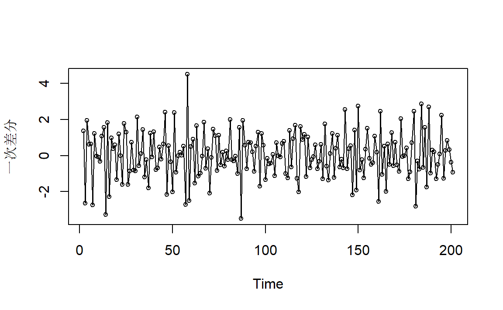
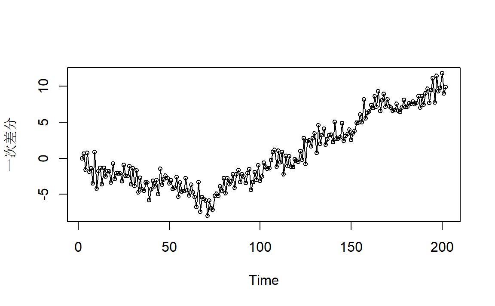
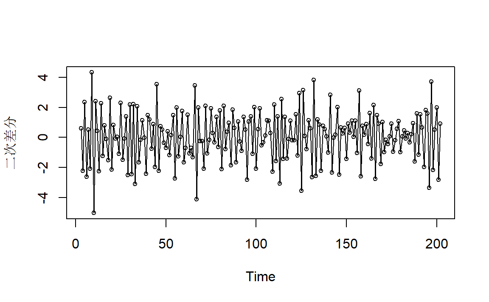

2 ARIMA模型的一些图像
2.1 IMA(d,q)过程
2.1.1 IMA(1,1)
模型表达： \[ W_t = Y_t-Y_{t-1},\quad W_t=e_t-\theta e_{t-1} \]
也即是 \[ Y_t=Y_{t-1}+e_t-\theta e_{t-1} \]
统计特性： \[ \mathrm{Var}(Y_t) = [1+\theta^2+(1-\theta)^2(t+m)]\sigma^2_e \] 其中 \(t=-m\) 为序列的首次观测时间。上式表示方差会随着时间无限增大。
对于较大的 \(m\) 以及中等大小的 \(k\)： \[ \mathrm{Corr}(Y_t,Y_{t-k})\approx1 \]
上式表示 \(Y_t,Y_{t-k}\) 呈高度正相关。
2.1.1.1 举例1
\[ Y_t=Y_{t-1}+e_t-0.8 e_{t-1} \]
模拟时间序列图：
图2.1: IMA(1,1)例1模拟时间序列图
因为方差的逐渐增大以及邻近相关系数的强相关性导致的图像像是有一定的趋势。
一次差分之后可以得到：

与图1.3非常地类似。
2.1.2 IMA(2,2)
模型表达： \[ W_t = Y_t-2Y_{t-1}+Y_{t-2},\quad W_t=e_t-\theta_1 e_{t-1}-\theta_2e_{t-2} \]
也即是 \[ Y_t=2Y_{t-1}-Y_{t-2}+e_t-\theta_1 e_{t-1}-\theta_2e_{t-2} \]
统计特性：
类似于IMA(1,1)，\(Y_t\) 的方差会随着时间迅速无限增长，对于所有中等大小的 \(k\) ，\(\mathrm{Corr}(Y_t,Y_{t-k})\approx1\)。
2.1.2.1 举例1
\[ Y_t=2Y_{t-1}-Y_{t-2}+e_t-e_{t-1}+0.6e_{t-2} \]
模拟时间序列图：
图2.2: IMA(2,2)例1模拟时间序列图
图像非常地平滑！同样也是由于方差的逐渐增大以及邻近相关系数的强相关性所导致。
一次差分：

二次差分：

这是平稳的MA(2)序列，与图1.4比较。
2.2 ARI(p,d)过程
2.2.1 ARI(1,1)
模型表达： \[ W_t = Y_t-Y_{t-1},\quad W_t = \phi W_{t-1}+e_t \]
也即是 \[ Y_t = (1+\phi)Y_{t-1}-\phi Y_{t-2}+e_t \]